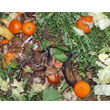

Following effective waste management practices can provide subsequent generations a more robust economy, a fairer and more inclusive society and a cleaner environment
Non-Composible(Prohibited) Organic Waste
Composible(Prohibited) Organic Waste
Rubber,Metal and Glass
Big Bones
Batteries
Cloth/Tape
Coconut Shell
Plastic Bags
Medicine/Chemical
Any Inorganic Material
Composible(Prohibited) Organic Waste
Fruits and Vegetables
Poultry Fish
Egg and Crab shells
Bakery Food
Garden Waste
Chicken and Meat
Leftover Meals
Fast Food